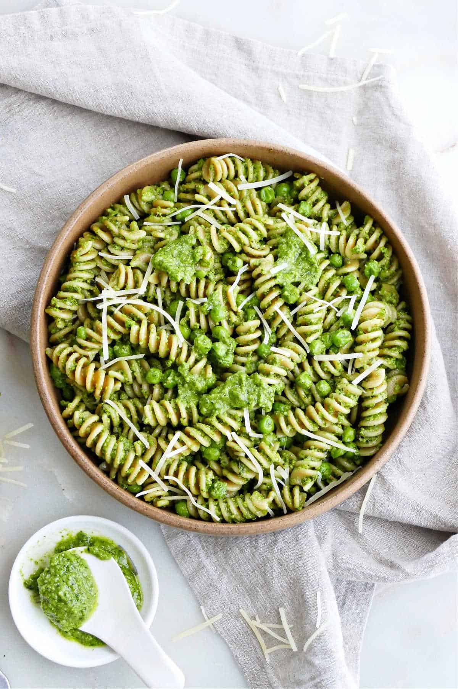

Pesto Pasta
Description:
Pesto pasta is an Italian dish made with noodles tossed in a sauce made with crushed garlic, pine nuts, salt, basil leaves, Parmigiano-Reggiano or Pecorino Sardo and olive oil.
Ingredients:
- 180 g spaghetti noodles, cooked according to package instructions
- 1/2 small onion, finely chopped
- 1/4 cup pesto
- 3 tbsp olive oil
- 1/4 cup grated Parmesan cheese
- freshly ground black pepper
- salt
- fresh basil leaves, to garnish
Steps:
- Heat the oil in a frying pan over medium low heat.
- Sauté onions and cook for 3 minutes or until onions are soft.
- Add pesto and salt and pepper then continue to cook for two minutes. Turn heat off
- In a large bowl, mix pesto mixture into pasta, stir in grated cheese. then serve.